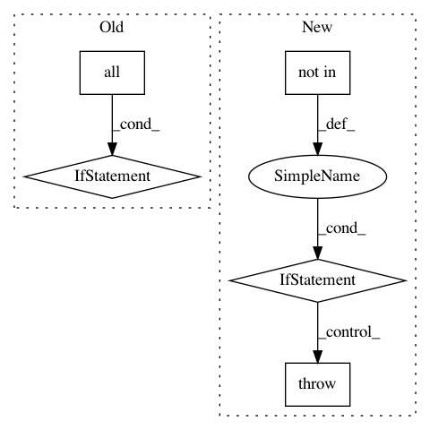

cf6a25ed5aae0f78e42b7b9594f54772880aaf53,linearmodels/panel/model.py,BetweenOLS,fit,#BetweenOLS#Any#Any#,510
Before Change
self._avgy = y
self._avgx = x
self._avgw = w
if np.all(self.weights.values2d == 1.0) and not reweight:
w = root_w = np.ones_like(w)
else:
root_w = np.sqrt(w)
wx = root_w * x
wy = root_w * y
params = lstsq(wx, wy)[0]
After Change
df_resid = nobs - df_model
cov_denom = nobs if not debiased else df_resid
cov_est = COVARIANCE_ESTIMATORS[cov_type]
if cov_est not in self._supported_covs:
raise ValueError("Requested covariance estimator is not supported for the model.")
cov = cov_est(wy, wx, params, cov_denom, **cov_config)
weps = wy - wx @ params
eps = y - x @ params
residual_ss = float(weps.T @ weps)
In pattern: SUPERPATTERN
Frequency: 3
Non-data size: 5
Instances
Project Name: bashtage/linearmodels
Commit Name: cf6a25ed5aae0f78e42b7b9594f54772880aaf53
Time: 2017-04-02
Author: kevin.k.sheppard@gmail.com
File Name: linearmodels/panel/model.py
Class Name: BetweenOLS
Method Name: fit
Project Name: markovmodel/PyEMMA
Commit Name: dbfe2afe79ac497075e50a3e569a1d63a346fb4d
Time: 2017-04-06
Author: m.scherer@fu-berlin.de
File Name: pyemma/_base/serialization/serialization.py
Class Name: SerializableMixIn
Method Name: _validate_interpolation_map
Project Name: pgmpy/pgmpy
Commit Name: 654cb3ebcd25491bff876971adcea2d2305207f4
Time: 2016-07-01
Author: yashuseth2503@gmail.com
File Name: pgmpy/factors/continuous/ContinuousFactor.py
Class Name: ContinuousFactor
Method Name: reduce